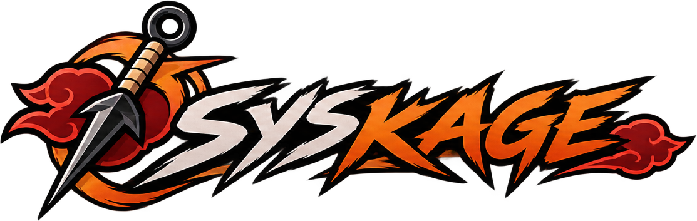

Sua identidade shinobi
Criar perfil ninja
Conte um pouco sobre sua origem, habilidades e preferências no mundo ninja. Você pode editar essas informações depois.
Campos obrigatórios

Cancelar e voltar à dashboardSua identidade shinobi
Conte um pouco sobre sua origem, habilidades e preferências no mundo ninja. Você pode editar essas informações depois.
Campos obrigatórios